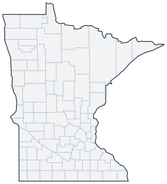

Historical county changes, 1790–1990 › Minnesota

| Name↕ | Unit↕ | Existed↕ | FIPS↕ |
|---|---|---|---|
| Aitkin County | county | 1860–1990 | 27001 |
| Anoka County | county | 1860–1990 | 27003 |
| Becker County | county | 1860–1990 | 27005 |
| Beltrami County | county | 1870–1990 | 27007 |
| Benton County | county | 1850–1990 | 27009 |
| Big Stone County | county | 1870–1990 | 27011 |
| Blue Earth County | county | 1860–1990 | 27013 |
| Brown County | county | 1860–1990 | 27015 |
| Buchanan County | county | 1860 | 27015.1 |
| Carlton County | county | 1860–1990 | 27017 |
| Carver County | county | 1860–1990 | 27019 |
| Cass County | county | 1860–1990 | 27021 |
| Chippewa County | county | 1870–1990 | 27023 |
| Chisago County | county | 1860–1990 | 27025 |
| Clay County | county | 1860–1990 | 27027 |
| Clearwater County | county | 1910–1990 | 27029 |
| Cook County | county | 1880–1990 | 27031 |
| Cottonwood County | county | 1860–1990 | 27033 |
| Crow Wing County | county | 1860–1990 | 27035 |
| Dakota County | county | 1850–1990 | 27037 |
| Dodge County | county | 1860–1990 | 27039 |
| Douglas County | county | 1860–1990 | 27041 |
| Faribault County | county | 1860–1990 | 27043 |
| Fillmore County | county | 1860–1990 | 27045 |
| Freeborn County | county | 1860–1990 | 27047 |
| Goodhue County | county | 1860–1990 | 27049 |
| Grant County | county | 1870–1990 | 27051 |
| Hennepin County | county | 1860–1990 | 27053 |
| Houston County | county | 1860–1990 | 27055 |
| Hubbard County | county | 1890–1990 | 27057 |
| Isanti County | county | 1860–1990 | 27059 |
| Itasca County | county | 1850–1990 | 27061 |
| Jackson County | county | 1860–1990 | 27063 |
| Kanabec County | county | 1860–1990 | 27065 |
| Kandiyohi County | county | 1860–1990 | 27067 |
| Kittson County | county | 1850–1990 | 27069 |
| Koochiching County | county | 1910–1990 | 27071 |
| Lac qui Parle County | county | 1880–1990 | 27073 |
| Lac qui Parle County (old) | county | 1870 | 27071.1 |
| Lake County | county | 1860–1990 | 27075 |
| Lake of the Woods County | county | 1930–1990 | 27077 |
| Le Sueur County | county | 1860–1990 | 27079 |
| Lincoln County | county | 1880–1990 | 27081 |
| Lyon County | county | 1880–1990 | 27083 |
| Mahkahta County | county | 1850 | 27085.1 |
| Mahnomen County | county | 1910–1990 | 27087 |
| Manomin County | county | 1860 | 27087.2 |
| Marshall County | county | 1880–1990 | 27089 |
| Martin County | county | 1860–1990 | 27091 |
| McLeod County | county | 1860–1990 | 27085 |
| Meeker County | county | 1860–1990 | 27093 |
| Mille Lacs County | county | 1860–1990 | 27095 |
| Monongalia County | county | 1860–1870 | 27095.1 |
| Morrison County | county | 1860–1990 | 27097 |
| Mower County | county | 1860–1990 | 27099 |
| Murray County | county | 1860–1990 | 27101 |
| Nicollet County | county | 1860–1990 | 27103 |
| Nobles County | county | 1860–1990 | 27105 |
| Norman County | county | 1890–1990 | 27107 |
| Olmsted County | county | 1860–1990 | 27109 |
| Otter Tail County | county | 1860–1990 | 27111 |
| Pennington County | county | 1910–1990 | 27113 |
| Pierce County | county | 1860 | 27113.1 |
| Pine County | county | 1860–1990 | 27115 |
| Pipestone County | county | 1880–1990 | 27117 |
| Polk County | county | 1860–1990 | 27119 |
| Pope County | county | 1870–1990 | 27121 |
| Ramsey County | county | 1850–1990 | 27123 |
| Red Lake County | county | 1900–1990 | 27125 |
| Redwood County | county | 1870–1990 | 27127 |
| Renville County | county | 1860–1990 | 27129 |
| Rice County | county | 1860–1990 | 27131 |
| Rock County | county | 1860–1990 | 27133 |
| Roseau County | county | 1900–1990 | 27135 |
| Scott County | county | 1860–1990 | 27139 |
| Sherburne County | county | 1860–1990 | 27141 |
| Sibley County | county | 1860–1990 | 27143 |
| St. Louis County | county | 1860–1990 | 27137 |
| Stearns County | county | 1860–1990 | 27145 |
| Steele County | county | 1860–1990 | 27147 |
| Stevens County | county | 1870–1990 | 27149 |
| Swift County | county | 1880–1990 | 27151 |
| Todd County | county | 1860–1990 | 27153 |
| Traverse County | county | 1870–1990 | 27155 |
| Wabasha County | county | 1850–1990 | 27157 |
| Wadena County | county | 1870–1990 | 27159 |
| Wahnata County | county | 1850 | 27159.1 |
| Waseca County | county | 1860–1990 | 27161 |
| Washington County | county | 1850–1990 | 27163 |
| Watonwan County | county | 1870–1990 | 27165 |
| Wilkin County | county | 1860–1990 | 27167 |
| Winona County | county | 1860–1990 | 27169 |
| Wright County | county | 1860–1990 | 27171 |
| Yellow Medicine County | county | 1880–1990 | 27173 |
White Earth Indian Reservation, not returned by county, and returned in Becker, Clearwater, and Mahnomen Counties in 1910(p. 86, Note 1).
Note: Decimals in FIPS codes come from Forstall, who gives every county a code, including counties that no longer exist. A county abolished between 1930 and 1990 keeps the code it had. However, a county which was abolished prior to 1930 never received a code. Such a county is given the code of the county which precedes it alphabetically plus a decimal to hold its place in the list.
Source: Richard L. Forstall (1996), Population of States and Counties of the United States: 1790 to 1990, U.S. Bureau of the Census (public domain). Always check a row against the scan it links to.